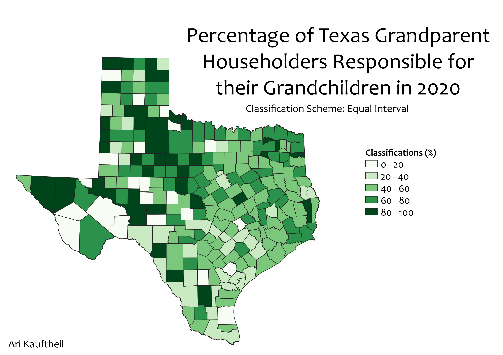
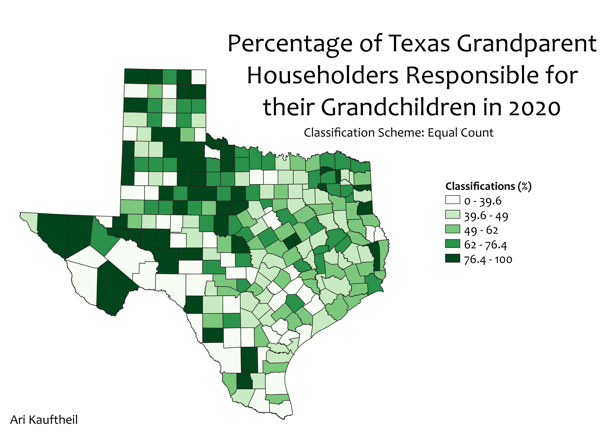

Homework 6.2: Census data ratios and classifications
Ari Kauftheil
In the previous section of this homework, I created a choropleth which counted the number of grandparent householders in each Texas county that are responsible for their grandchildren under the age of 18.
The universe for this attribute is the number of grandparent householders (people who are heads of household and also have grandchildren) in each county.
I divided the attribute from the first choropleth by this universe to create my ratio. I multiplied the output field by 100 to turn it into a percentage.
My goal in using this ratio is to learn which parts of Texas have a greater proportion of family structures which involve grandparents living with and taking care of their grandchildren.
The normalized data shows larger proportions of grandparents being responsible for taking care of their grandchildren in pockets of west and northwest Texas, while there are also pockets with low rates.
A somewhat smaller proportion of grandparents seem to be responsible for their grandchildren in the southeast, where large cities like Houston, Austin, and San Antonio are located.
Equal Interval Classification
Pros and Cons
This classification scheme allows the viewer to better understand what the data means numerically, since each change in color has an equal change in numerical value.
It allows for easy comparison of the prevalence of different ranges of values.
However, it doesn't allow for clear distinctions to be made on smaller scales, when lots of the data is clustered in a narrow range.
For this map, the data is pretty spread out, so it's not too much of a problem.

Equal Count Classification
Pros and Cons
This classification scheme is good for telling where the data leans overall by comparing the size of the range for each color.
A smaller range for that color could indicate that the data is clustered in and around that range.
On this map, the greatest number values are within the middle 50 percentiles.
On the contrary, large ranges could also exist as result of one or two outliers.
Equal count is not so good for visualizing distinctions between areas on the map, since two areas could be lumped in the same class with very different attribute values.

Natural Breaks Classification
Pros and Cons
This method of classification is really good for representing the distinctions between groups of data visually, and to understand which areas are on similar relative levels.
However, since there is no surface mathematical organization, the viewer can't really tell what the data means numerically.
 I did not use any additional data for this section.
I did not use any additional data for this section.